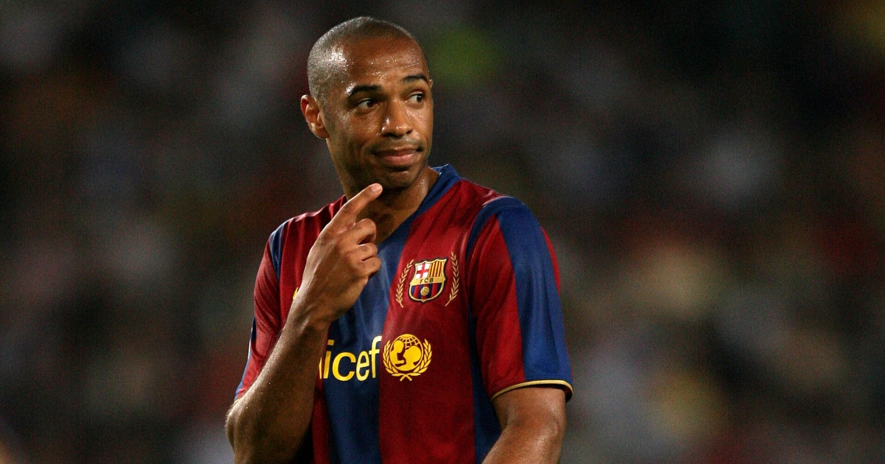

Capacity: 60,260
| Championships | club stadium | Historic scorer |
|---|---|---|
|
 | |
| English Premier League (13) FA Shield (16) FA Cup (14) Professional League Cup (2) European Cup Winners' Cup (1) | Emirates Stadium is a football stadium in Holloway, North London, England, and is the home stadium of Arsenal Football Club Capacity: 60,260 |
France's Thierry Henry with 228 goals |